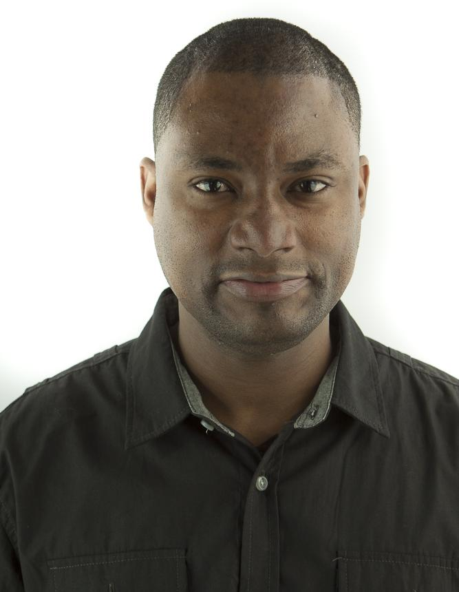

|  |
Some stuff about me...In a heartbeat after I learned how to write code that made the computer add two numbers, I became passionate about programming. Later that same year I was selected among a pool of competitive students for a scholarship to study Computer Science. When I started, the first thing I noticed was the variety of technologies that I was being exposed to. They were all exciting and I wanted to try them all. I did graduate with Bachelor degree in Computer Science and started working full time for Habitat for Humanity. After the 2010 earthquake in Haiti, my skills to support technology infrastructures were more needed than programming. Therefore, I decided to work on side projects and later launched an app (http://www.branchew.com) written in the PHP framework Yii that connects Haitian professionals. I moved to Boston soon after that and wanted to also try Engineering as part of my new start. I recently went to Harvard to do research on soft robotics. I was successful on finding new processes to create soft actuators with significant results that will soon be published. I realized that I was missing programming. My past experience and passion for the web led me to find Startup Institute where I’m working to further my skills for a career in the web industry. |
Write a lot of code at work and whenever I want :) |
Throw it to an Interpreter or Compiler
|
Make users happy so they come back for more |